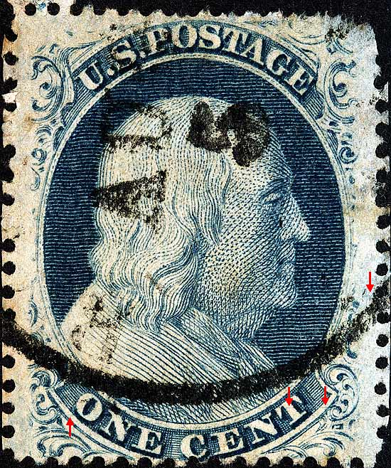
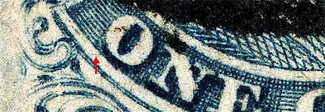
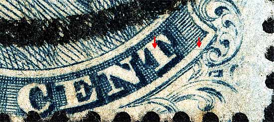
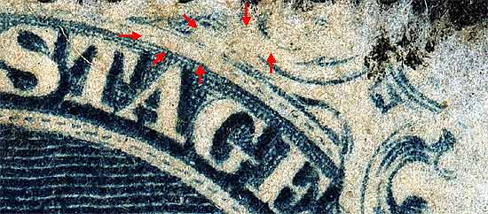
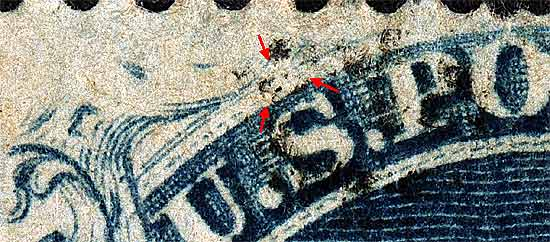

| 1¢ Franklin Issue of 1857-61, PLATE 5.
Pos 20R5, (Scott #24 var) |
| Scott #24 Blue, Type Va, Relief B Issued only perforated. NOTES: This position also shows a break in the top curved line above the "S" of "US." Also note the lack of dashes below the top line at this break. Many of the Type Va "B" reliefs share this feature. |
|  |
| Figure 1. (Below) A faint horizontal plate scratch or scribe line cutting across the lower portion of the "O" of ONE and into the lower half of Ornament H. The Neinken plating diagram illustrates this correctly. In the August 1979 edition of The Chronicle (Vol 31, No. 3 Whole No. 103) Neinken publishes an improved diagram which illustrates the line at the top of the "O" which is clearly incorrect.
 |
| Figure 2. (Below) The faint horizontal plate scratch or scribe line cutting across the "T" of CENT and right side of the lower label. As shown in the improved plating diagram published in the August 1979 edition of The Chronicle (Vol 31, No. 3 Whole No. 103).
 |
| Figure 3. (Below) This position shows a break in the top curved line and a "wipe-out" of Ornaments W/X/Y above the "AGE" of POSTAGE. The plating diagrams illustrate this feature. There is also a faint horizontal scratch above and between the T and A of POSTAGE.
 |
| Figure 4. (Below) This position shows a break in the top curved line above the "S" of "US." Also note the lack of dashes below the top line at this break. Many of the Type Va "B" reliefs share this feature.
 |
| DISCLAIMER and COPYRIGHT INFORMATION: Thanks for visiting this site. I hope you learn something new as we are making new discoveries all the time. You, the visitor, have my permission to link to my pages and to share the INFORMATION with others. The images themselves fall under the fair use guidelines established by the United States Congress and Copyright law. Basically contact us before using. I also ask in return that you send me an e-mail if I have made a mistake, or have made some other technical blunder that in my rush to put these pages up would cause the visitor confusion. Please also visit my other website at www.slingshotvenus.com. and support the live music arts. While your there, be sure to purchase our music. There are not many philatelic rock stars around and we need all the help we can get. :-) I can be reached at: nerdman@ix.netcom.com |